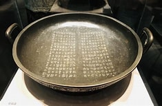

青铜器1
这是一件古老的青铜器，具有极高的历史价值。

青铜器2
这件青铜器是春秋时期的代表作之一。

青铜器3
这件青铜器是中国历史上非常有名的文物。

青铜器4
这件是春秋晚期“弦纹壶”铜器

青铜器5
这件是宋代“嵌金银牺尊”铜器

青铜器6
这件南宋“瑞气清芬钟形镜”铜器

青铜器7
这件隋至初唐“明心瑞兽纹镜”铜器

青铜器8
这件宋代“福寿家安菱花镜”铜器

青铜器9
这件战国“环耳敦”铜器

青铜器10
战国至西汉“铺首衔环壶”铜器

青铜器11
这是一件青铜器，展示了精湛的工艺技巧。

青铜器12
这件青铜器代表了古代青铜器的典型风格。

青铜器13
这件青铜器保存完好，是研究青铜器文化的重要资料。

青铜器14
这件是战国“嵌红铜鸟兽纹壶”铜器。

青铜器15
这件是商晚期“兽面纹觚”铜器。

青铜器16
这件是亚丑口尊。

青铜器17
这件是父辛尊。

青铜器18
这件是蟠夔纹尊。

青铜器19
这是蟠夔纹尊细节展现。

青铜器20
这件是汉代“附金属胆”铜器。
青铜器21
这件青铜器做工精美。
青铜器22
这是一件春秋战国时期的青铜器，做工精美。
青铜器23
这件青铜器的设计体现了古代工艺的精细。

青铜器24
这件是汉代“博山炉”铜器。

青铜器25
这件是战国“瓦纹豆盖”铜器。

青铜器26
这件是六朝“鎏金云纹洗”铜器。

青铜器27
这件是商晚期“兽面纹觚”铜器。

青铜器28
这是兽面纹尊的细节呈现图，做工精湛。

青铜器29
这件是“波曲纹方壶”铜器。

青铜器30
这件是战国晚期至西汉早期“兽环钫”铜器。